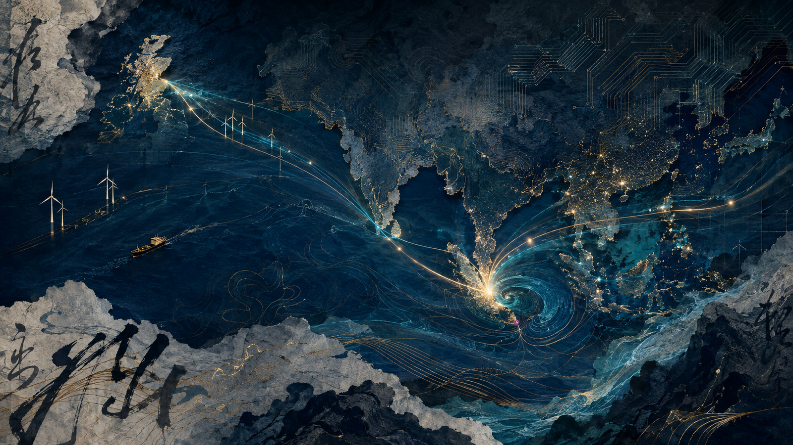

01
La historia como infraestructura
Escocia, el imperio, Singapur y Hong Kong forman una cadena de circulación de instituciones, técnicas, capitales y valores.

George Yeo ante la geoeconomía, la energía, la inteligencia artificial y el orden multipolar.
¿Qué permite a una sociedad convertir energía e información en organización, prosperidad y poder sin destruir la cohesión que hace posible ese logro?
Las pestañas separan los grandes movimientos del discurso. Cada lectura conserva el hilo de Yeo y permite avanzar sin perder la arquitectura general.
Escocia, el imperio, Singapur y Hong Kong forman una cadena de circulación de instituciones, técnicas, capitales y valores.
La superioridad informativa puede facilitar una operación; no garantiza el desenlace político cuando el adversario aprende y se adapta.
El declive relativo estadounidense no conduce necesariamente a una hegemonía china. Yeo imagina varios polos y un Estados Unidos todavía central.
Agricultura, vapor, petróleo y electricidad computacional amplían las escalas de organización y desplazan los centros de poder.
Algoritmos y energía sólo se convierten en prosperidad cuando las instituciones absorben el cambio y contienen sus costes sociales.
La iniciativa del mercado necesita una mano visible de leyes, memoria y moral; demasiado débil desordena, demasiado rígida asfixia.
Cada tramo abre una síntesis del argumento y permite volver directamente al momento correspondiente de la conferencia.
No será únicamente financiera o tecnológica. Será la capacidad de convertir información y energía en prosperidad compartida sin destruir cohesión, libertad de iniciativa y sentido moral.
La nueva Ilustración debe reunir pensamiento histórico, conocimiento científico, economía política y reflexión ética. Su figura central no es el experto omnisciente, sino el preocupado reflexivo que reconoce los límites del poder.
El informe completo desarrolla todos los temas de la ponencia y del coloquio. Puede consultarse en PDF o descargarse en Word.